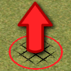
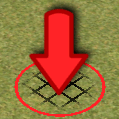

Toggle navigation
Terrain Editor
File
New terrain file
Open file
Save/Export to
Edit
Undo
Redo
Tools
Terrain
Textures
Objects
Import
Texture
Object
Selected tool:
{{selectedTool.hill ? 'Hill' : 'Valley'}}
Current water level:
{{variables.waterLevel}} units
Current ring radius:
{{variables.radius}} units
Terrain edit

Create a hill

Create a valley
Set water level: {{variables.waterLevel}} units
Set ring radius: {{variables.radius}} units
Textures
Set upper texture
{{texture.name}}
Set middle texture
{{texture.name}}
Set lower texture
{{texture.name}}
{{texture.name}} texture
Insert objects
{{item.name}}
{{item}}
N